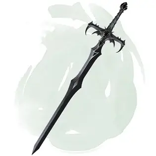

Меч Каса
Sword of Kas
Оружие (длинный меч), артефакт (требуется настройка)

Когда Векна получил власть, он сделал злого и безжалостного полководца, Каса Кроваворукого, своим телохранителем и приближенным. Этот злодей был советником, военачальником и наёмным убийцей. За выдающиеся успехи он заслужил уважение Векны и награду: меч, с происхождением, таким же тёмным, как его хозяин.
Кас долго служил личу, но вместе с его собственной силой росла и его гордыня. Его меч убедил его уничтожить Векну, чтобы он сам мог править империей. Легенды гласят, что Векна был уничтожен рукой Каса, но и Векна уничтожил своего полководца, оставив один лишь только меч. После этого мир стал светлее.
Меч Каса это магический, разумный длинный меч, предоставляющий бонус +3 к броскам атаки и урона, совершённым им. Он совершает критическое попадание при выпадении «19–20», а нежити причиняет дополнительный урон 2к10.
Если меч не испробует крови через 1 минуту после того как его вынут из ножен, владелец совершает спасбросок Харизмы Сл 15. В случае успеха он получает урон психической энергией 3к6. При провале владелец становится доминируемым мечом, как будто под заклинанием подчинение чудовища [dominate monster], и меч требует, чтобы его омыли кровью.
Эффект заклинания оканчивается, когда требование меча будет выполнено.
Случайные свойства. Меч Каса обладает несколькими свойствами, определяемыми случайным образом:
- 1 малое положительное свойство
- 1 основное положительное свойство
- 1 малое отрицательное свойство
- 1 основное отрицательное свойство
Дух Каса. Пока меч находится у вас, вы добавляете к10 к инициативе в начале каждого сражения. Кроме того, когда вы действием атакуете мечом, вы можете передать весь его бонус атаки или его часть к Классу Доспеха. Изменённые бонусы остаются действовать до начала вашего следующего хода.
Заклинания. Пока меч находится у вас, вы можете действием наложить им одно из следующих заклинаний (Сл спасброска 18): божественное слово [divine word], перст смерти [finger of death] или призыв молнии [call lightning]. Использовав меч для накладывания заклинания, вы до следующего рассвета не сможете повторно наложить им это же самое заклинание.
Разум. Меч Каса — разумное хаотично-злое оружие с Интеллектом 15, Мудростью 13 и Харизмой 16. Он обладает слухом и тёмным зрением в пределах 120 футов. Это оружие может понимать Общий язык, а также говорить и читать на нём и телепатически общаться с владельцем.
Индивидуальность. Предназначение меча в уничтожении Векны. Для этого нужно убивать последователей Векны, уничтожать плоды его деяний и срывать планы. Меч Каса также стремится уничтожать тех, кто развращён глазом и рукой Векны [eye and hand of Vecna]. Одержимость меча этими артефактами в конечном счете передаётся и его владельцу.
Уничтожение Меча. Существо, настроенное на глаз Векны [eye of Vecna] и руку Векны [hand of Vecna], может использовать свойство объединённых артефактов накладывать заклинание исполнение желаний [wish], чтобы уничтожить меч Каса. Существо должно наложить заклинание исполнение желаний [wish] и совершить проверку Харизмы, противопоставленную проверке Харизмы Меча. Меч при этом должен находиться в пределах 30 футов, иначе заклинание будет потрачено впустую. Если состязание выиграет меч, ничего не произойдёт, и заклинание исполнение желаний [wish] будет потрачено впустую. Если Меч проиграет, он уничтожается.